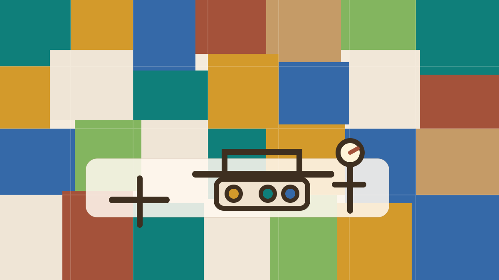
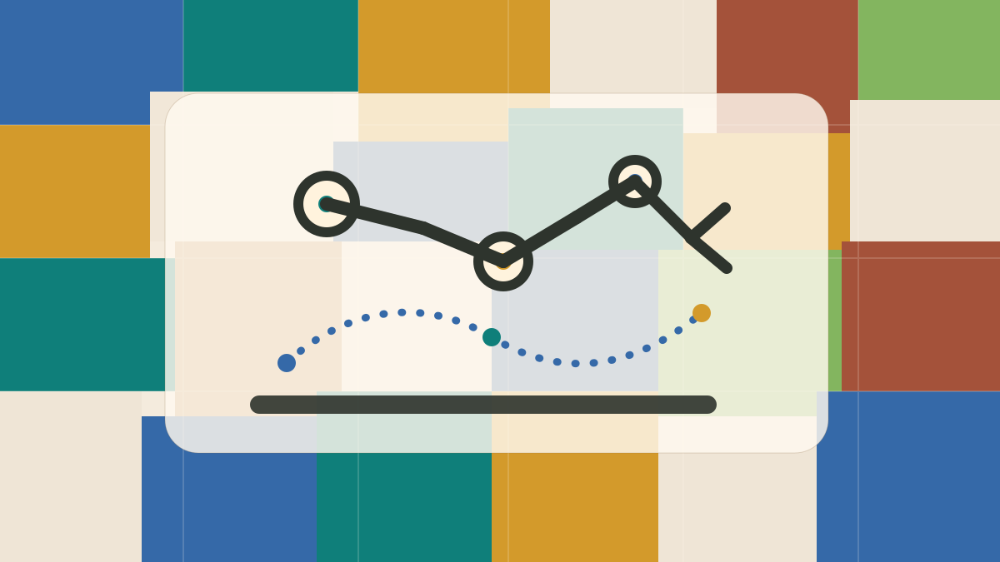
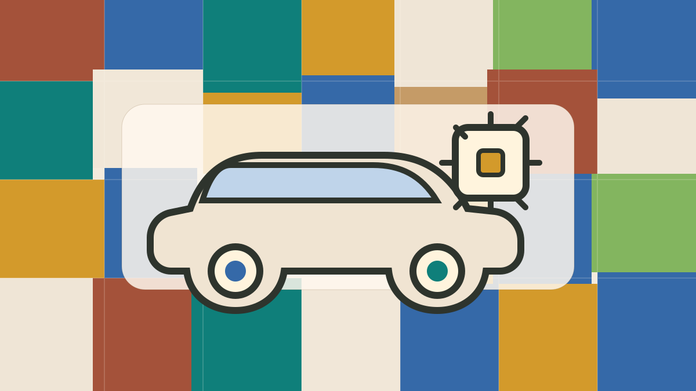

Engineering support
Additional capacity
Support for an existing team in mechanics, PCB, firmware, desktop software, ROS 2, QA, or documentation.
We work as an external engineering team or as a focused work-package owner. The cooperation model depends on the task, available documentation, required speed, and level of responsibility.
Support for an existing team in mechanics, PCB, firmware, desktop software, ROS 2, QA, or documentation.
A bounded task with agreed inputs, scope, deliverables, review points, and acceptance criteria.
Early engineering for a device, fixture, test bench, robotic subsystem, automation unit, or integration tool.
Requirements, interface descriptions, architecture notes, diagrams, test plans, reports, and handover packages.
Test cases, acceptance checks, issue reproduction, measurement records, traceability notes, and defect reports.
Task tracking, meeting notes, procurement follow-up, document flow, risk tracking, and communication support.


